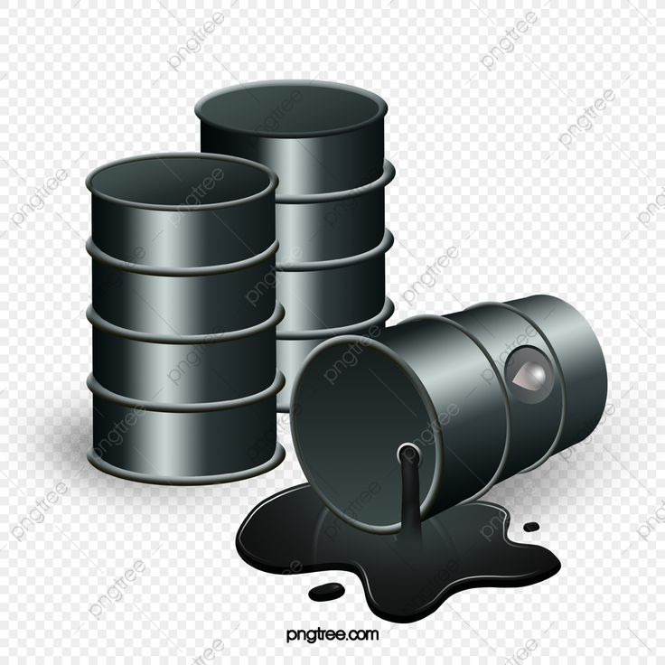

Commodities na Bovespa
Commodities principais:
Açúcar
Café
Minério de Ferro
Petróleo
Soja
Etanol
Ouro

Vantagens de Investir em Commodities
- Diversificação da carteira: As commodities ajudam a balancear riscos e a aumentar a diversidade dos investimentos.
- Proteção contra inflação: As commodities são ativos reais, que tendem a se valorizar com a inflação.
- Potencial de ganhos: A volatilidade dos preços globais das commodities oferece oportunidades de lucro.